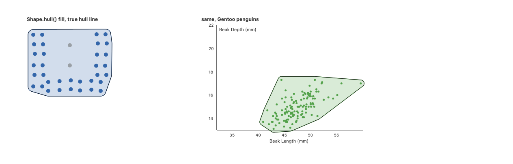
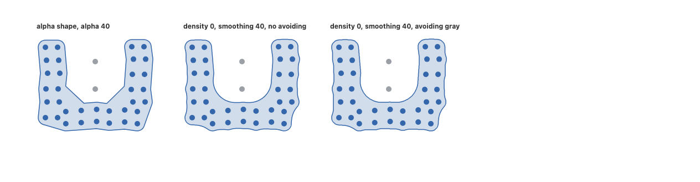
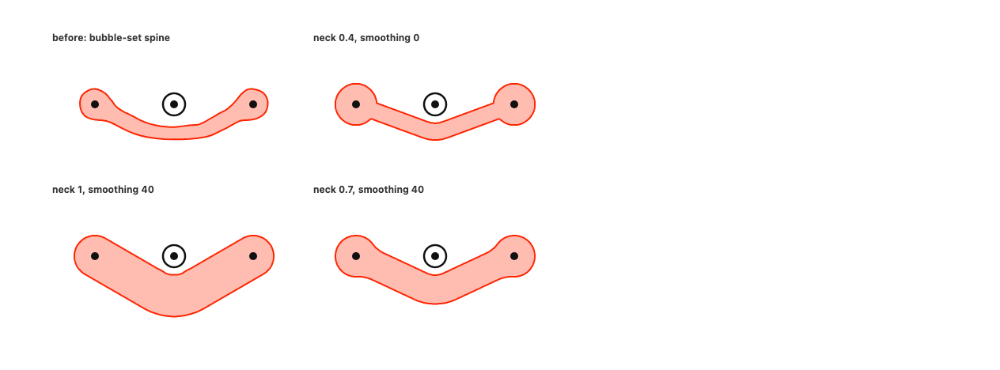
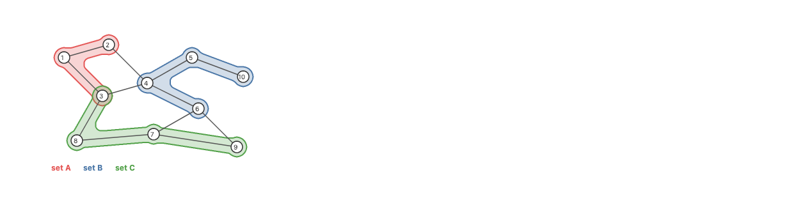
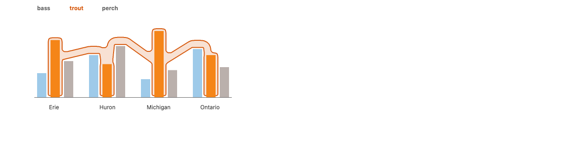

<title>Background and Hull API</title>
<style>
  @import url("https://fonts.googleapis.com/css2?family=IBM+Plex+Sans:ital,wght@0,400;0,500;0,600;1,400&family=IBM+Plex+Mono:wght@400;500&display=swap");
  :root {
    --bg: #f6f7f9;
    --surface: #ffffff;
    --fg: #1d232b;
    --muted: #5b6573;
    --line: #dde2e8;
    --accent: #0f6e74;
    --accent-soft: #e3f1f1;
    --code-bg: #eef1f4;
    --img-bg: #ffffff;
    --warn: #8a5a00;
    --warn-soft: #fbf1dc;
  }
  @media (prefers-color-scheme: dark) {
    :root:not([data-theme="light"]) {
      --bg: #14181d;
      --surface: #1b2027;
      --fg: #e4e8ed;
      --muted: #9aa5b3;
      --line: #2d343e;
      --accent: #5cc0c4;
      --accent-soft: #1d3134;
      --code-bg: #20262e;
      --img-bg: #ffffff;
      --warn: #e0b45a;
      --warn-soft: #2e2717;
      color-scheme: dark;
    }
  }
  :root[data-theme="dark"] {
    --bg: #14181d;
    --surface: #1b2027;
    --fg: #e4e8ed;
    --muted: #9aa5b3;
    --line: #2d343e;
    --accent: #5cc0c4;
    --accent-soft: #1d3134;
    --code-bg: #20262e;
    --img-bg: #ffffff;
    --warn: #e0b45a;
    --warn-soft: #2e2717;
    color-scheme: dark;
  }
  * {
    box-sizing: border-box;
  }
  body {
    background: var(--bg);
    color: var(--fg);
    margin: 0;
    padding: 32px 16px 64px;
    font:
      15.5px/1.6 "IBM Plex Sans",
      system-ui,
      sans-serif;
  }
  main {
    max-width: 1080px;
    margin: 0 auto;
  }
  h1 {
    font-size: 30px;
    line-height: 1.2;
    margin: 0 0 6px;
    font-weight: 600;
    letter-spacing: -0.01em;
  }
  h2 {
    font-size: 21px;
    margin: 48px 0 10px;
    font-weight: 600;
    padding-top: 14px;
    border-top: 1px solid var(--line);
  }
  h3 {
    font-size: 16.5px;
    margin: 28px 0 8px;
    font-weight: 600;
  }
  p,
  li {
    max-width: 68ch;
  }
  a {
    color: var(--accent);
  }
  .eyebrow {
    font:
      500 12px/1 "IBM Plex Mono",
      monospace;
    letter-spacing: 0.06em;
    text-transform: uppercase;
    color: var(--muted);
    margin-bottom: 10px;
  }
  .lede {
    color: var(--muted);
    font-size: 16.5px;
  }
  code {
    font-family: "IBM Plex Mono", ui-monospace, monospace;
    font-size: 0.88em;
    background: var(--code-bg);
    padding: 1px 4px;
    border-radius: 3px;
  }
  pre {
    background: var(--code-bg);
    border: 1px solid var(--line);
    border-radius: 6px;
    padding: 12px 14px;
    overflow-x: auto;
    margin: 8px 0;
    max-width: 100%;
  }
  pre code {
    background: none;
    padding: 0;
    font-size: 12.8px;
    line-height: 1.55;
    white-space: pre;
  }
  .rec {
    background: var(--accent-soft);
    border-left: 3px solid var(--accent);
    border-radius: 4px;
    padding: 14px 18px;
    margin: 20px 0;
  }
  .rec p {
    margin: 6px 0;
  }
  .lang {
    font:
      500 11px/1 "IBM Plex Mono",
      monospace;
    color: var(--muted);
    text-transform: uppercase;
    letter-spacing: 0.05em;
    margin: 12px 0 2px;
  }
  figure {
    margin: 0;
  }
  .shot {
    background: var(--img-bg);
    border: 1px solid var(--line);
    border-radius: 6px;
    padding: 8px;
    display: block;
  }
  .shot img {
    display: block;
    max-width: 100%;
    height: auto;
    margin: 0 auto;
  }
  figcaption {
    font-size: 13.5px;
    color: var(--muted);
    margin-top: 6px;
    line-height: 1.45;
  }
  .grid4 {
    display: grid;
    grid-template-columns: repeat(4, minmax(0, 1fr));
    gap: 14px;
    margin-top: 12px;
  }
  .grid3 {
    display: grid;
    grid-template-columns: repeat(3, minmax(0, 1fr));
    gap: 14px;
    margin-top: 12px;
  }
  .grid2 {
    display: grid;
    grid-template-columns: repeat(2, minmax(0, 1fr));
    gap: 14px;
    margin-top: 12px;
  }
  .card {
    background: var(--surface);
    border: 1px solid var(--line);
    border-radius: 8px;
    padding: 12px;
  }
  .card h4 {
    margin: 0 0 4px;
    font:
      500 13.5px/1.3 "IBM Plex Mono",
      monospace;
    color: var(--accent);
  }
  .card p {
    font-size: 13.5px;
    margin: 6px 0 0;
    color: var(--muted);
  }
  .ex {
    display: grid;
    grid-template-columns: minmax(0, 1.1fr) minmax(0, 1fr);
    gap: 18px;
    align-items: start;
    margin: 14px 0 26px;
  }
  .ex > div {
    min-width: 0;
  }
  .pair {
    display: grid;
    grid-template-columns: repeat(2, minmax(0, 1fr));
    gap: 10px;
  }
  table {
    border-collapse: collapse;
    width: 100%;
    font-size: 14px;
    margin: 10px 0;
  }
  th,
  td {
    text-align: left;
    vertical-align: top;
    padding: 7px 10px;
    border-bottom: 1px solid var(--line);
  }
  th {
    font-weight: 600;
    color: var(--muted);
    font-size: 12.5px;
    text-transform: uppercase;
    letter-spacing: 0.04em;
  }
  .tablewrap {
    overflow-x: auto;
    max-width: 100%;
  }
  .tag {
    display: inline-block;
    font:
      500 11px/1.6 "IBM Plex Mono",
      monospace;
    padding: 0 6px;
    border-radius: 3px;
    background: var(--code-bg);
    color: var(--muted);
  }
  .tag.ok {
    background: var(--accent-soft);
    color: var(--accent);
  }
  .tag.dep {
    background: var(--warn-soft);
    color: var(--warn);
  }
  .note {
    background: var(--warn-soft);
    color: var(--fg);
    border-radius: 4px;
    padding: 10px 14px;
    font-size: 14px;
    max-width: none;
  }
  ol.decisions {
    padding-left: 22px;
  }
  ol.decisions li {
    margin: 6px 0;
  }
  .small {
    font-size: 13.5px;
    color: var(--muted);
  }
  .noimg {
    background: var(--code-bg);
    border: 1px dashed var(--line);
    border-radius: 6px;
    padding: 28px 10px;
    text-align: center;
    color: var(--muted);
    font-size: 13px;
  }
  @media (max-width: 860px) {
    .grid4 {
      grid-template-columns: repeat(2, minmax(0, 1fr));
    }
    .grid3 {
      grid-template-columns: repeat(2, minmax(0, 1fr));
    }
    .ex {
      grid-template-columns: 1fr;
    }
  }
  @media (max-width: 520px) {
    .grid4,
    .grid3,
    .grid2,
    .pair {
      grid-template-columns: 1fr;
    }
    h1 {
      font-size: 25px;
    }
  }
</style>

<main>
  <div class="eyebrow">GoFish API proposal · background / hull</div>
  <h1>
    One <code>enclose</code>: a box, or a blob with hull and spine shortcuts
  </h1>
  <p class="lede">
    GoFish already has a box-only <code>enclose</code> (also exported as
    <code>background</code>). This proposal turns it into one relational mark
    that draws an outline around a set of nodes: a box, or a region built from
    discs around the members and links between them. The outlines are values of
    a new strategy family, <code>Shape</code>, chosen with a
    <code>shape</code> option the way <code>Curve</code> is chosen with
    <code>curve</code> on <code>line</code>. The region member,
    <code>Shape.blob()</code>, generalizes KelpFusion; the convex hull and the
    spine are exact shortcuts of it, the way <code>sina()</code> and
    <code>jitter()</code> are shortcuts of <code>noise()</code>.
  </p>

  <div class="rec">
    <p>
      <strong>Recommendation.</strong> Rebuild <code>enclose</code> with
      <code>createRelationalMark</code> and give it
      <code
        >shape: Shape.box({ rx, ry }) | Shape.blob({ density, neck, smoothing,
        avoiding, via, clearance })</code
      >, with two shortcuts: <code>Shape.hull(opts)</code> =
      <code>Shape.blob({ density: 1, neck: 1, ...opts })</code> and
      <code>Shape.spine(opts)</code> =
      <code>Shape.blob({ density: 0, ...opts })</code>. <code>padding</code> and
      paint stay on <code>enclose</code>. Delete the
      <code>background</code> alias. Do not add a
      <code>.background()</code> modifier yet; it is the runner-up, to add later
      as exact sugar.
    </p>
    <pre><code>// one hull per species: group the points in a second layer
chart(penguins)
  .flow(scatter({ x: "Beak Length (mm)", y: "Beak Depth (mm)" }))
  .mark(circle({ r: 3, fill: "Species" }).name("points"))
  .layer(
    chart(selectAll("points"))
      .flow(group({ by: "Species" }))
      .mark(enclose({ shape: Shape.hull(), padding: 6,
                      fill: "Species", opacity: 0.2 })))

// contains a and c but not b: combinator form over refs
layer([a, b, c]).relate(({ a, b, c }) =&gt; [
  enclose({ shape: Shape.spine({ avoiding: [b], neck: 0.7, smoothing: 40 }),
            padding: 21, fill: "#ff2400" }, [a, c]),
])</code></pre>
  </div>
  <p class="small">
    Every picture below is a real render of a throwaway prototype story
    (<code>stories/_proposals/BackgroundHull.stories.tsx</code>). Since
    <code>Shape</code> does not exist, the stories place members at fixed pixel
    positions and compute outlines with story-local code (convex hull, an alpha
    shape on Delaunay triangles, a bubble set assembled from
    <code>bubblesets-js</code> parts, a simple KelpFusion prototype, and the
    generalized construction), drawn with <code>polygon</code>. Box panels use
    the real <code>enclose</code>. The code beside each picture is the proposed
    spelling, not the story's code.
  </p>

  <h2>Strategy grid (earlier three-member design)</h2>
  <p>
    Same members (blue U-shaped cluster) and the same two non-members (gray) in
    each panel, <code>padding: 8</code>. This grid shows the earlier design,
    kept for comparison; the next section shows the same data under the blob.
  </p>
  <div class="grid4">
    <div class="card">
      <h4>Shape.box()</h4>
      <div class="shot">
        
      </div>
      <p>
        The padded bounding box. Real <code>enclose</code>; note its fill
        painting over the gray dots (#986).
      </p>
    </div>
    <div class="card">
      <h4>Shape.hull()</h4>
      <div class="shot">
        
      </div>
      <p>Convex hull of the padded member outlines. Never has dents.</p>
    </div>
    <div class="card">
      <h4>alpha shape, alpha 40 (dropped)</h4>
      <div class="shot">
        
      </div>
      <p>
        Alpha shape: openings wider than a 40 px disc are carved out. Depends
        only on the members.
      </p>
    </div>
    <div class="card">
      <h4>bubble-set spine (earlier)</h4>
      <div class="shot">
        
      </div>
      <p>
        Connects the members with a tree that bends around the listed
        non-members, then draws a smooth outline around it.
      </p>
    </div>
  </div>
  <p class="small">
    The concave hull and the spine look alike here but answer different
    questions. The hull's dent comes from the members' spacing and ignores the
    gray dots; the spine's dent comes from the <code>avoiding</code> list. The
    Topology example is the case only the spine can draw.
  </p>

  <h2>One construction: the blob, with hull and spine as shortcuts</h2>
  <p>
    Josh asked whether KelpFusion could be generalized, by making the size of
    the circles around the points configurable, so that it covers the usual
    hull, and whether it and the alpha shape could be unified. The answer
    changes the recommendation: hull and spine become two shortcuts of one
    general member, <code>Shape.blob()</code>, the way <code>sina()</code> and
    <code>jitter()</code> are shortcuts of <code>noise()</code> (#1018, which
    made the scatter overlap strategy one <code>noise()</code> with two
    presets).
  </p>
  <div class="grid2">
    <div class="card">
      <h4>Delaunay triangulation</h4>
      <p>
        The standard way to split a point set into triangles: no point lies
        inside the circle through any triangle's corners. Its outer boundary is
        the convex hull.
      </p>
    </div>
    <div class="card">
      <h4>Voronoi cell</h4>
      <p>
        The part of the plane closer to one point than to any other point of the
        set.
      </p>
    </div>
    <div class="card">
      <h4>Minkowski sum with a disc</h4>
      <p>
        Growing a shape by a distance <em>r</em> in every direction, so it holds
        every point within <em>r</em> of the shape. Padding is this operation.
      </p>
    </div>
    <div class="card">
      <h4>Morphological closing</h4>
      <p>
        Grow by <em>s</em>, then shrink by <em>s</em>. Convex parts come back
        unchanged, concave corners get rounded with radius <em>s</em>, and gaps
        narrower than about 2<em>s</em> are filled: everything a rolling disc of
        radius <em>s</em> cannot reach.
      </p>
    </div>
    <div class="card">
      <h4>Alpha hull, alpha shape</h4>
      <p>
        In Edelsbrunner, Kirkpatrick and Seidel (1983), the alpha hull is what
        remains when every disc of radius alpha that holds no point is removed.
        The alpha shape is the same with straight edges instead of arcs.
      </p>
    </div>
  </div>

  <h3>Alpha shape and KelpFusion: what is the same and what is not</h3>
  <div class="tablewrap">
    <table>
      <tr>
        <th>Question</th>
        <th>Answer</th>
        <th>Status</th>
      </tr>
      <tr>
        <td>The alpha hull, in terms of closing?</td>
        <td>
          Exactly the closing of the point set by a disc of radius alpha.
          "Remove every empty disc of radius alpha" is the definition of
          closing.
        </td>
        <td>
          Definition: Edelsbrunner, Kirkpatrick, Seidel, IEEE Trans. Inf. Theory
          1983. The match with closing is my derivation (inferred).
        </td>
      </tr>
      <tr>
        <td>The alpha complex?</td>
        <td>
          The points, edges and triangles of the Delaunay triangulation whose
          smallest empty circle has radius at most alpha. Its union is the alpha
          shape.
        </td>
        <td>Edelsbrunner and Mücke, ACM TOG 1994. From memory.</td>
      </tr>
      <tr>
        <td>Its relation to discs?</td>
        <td>
          Put a disc of radius alpha on each point, cut to the point's Voronoi
          cell. The complex has an edge where two cut discs touch and a triangle
          where three meet; the union of discs has the same pieces and holes as
          the alpha shape.
        </td>
        <td>
          Edelsbrunner, "The union of balls and its dual shape", 1995. From
          memory.
        </td>
      </tr>
      <tr>
        <td>A KelpFusion node area?</td>
        <td>
          A disc of radius <em>r</em> cut to the node's Voronoi cell, which is
          exactly Edelsbrunner's cut disc.
        </td>
        <td>Definition verified in the paper; the identity is inferred.</td>
      </tr>
      <tr>
        <td>Alpha shape a special case of KelpFusion?</td>
        <td>
          No. KelpFusion's node areas touch along the alpha complex of radius
          <em>r</em>, but its links come from the shortest-path graph
          SPG(<em>t</em>), which always connects all members and does not change
          with scale. The alpha complex falls apart once alpha is below half the
          widest gap, and it changes with scale.
        </td>
        <td>Inferred.</td>
      </tr>
      <tr>
        <td>KelpFusion a special case of the alpha shape?</td>
        <td>
          No. For 1 &lt; <em>t</em> &lt; ∞ it keeps long links without the
          triangles around them, which no alpha complex does.
        </td>
        <td>Inferred.</td>
      </tr>
      <tr>
        <td>What they share</td>
        <td>
          Both keep some Delaunay links, fill some faces, and grow the result.
          Both end at the full triangulation, whose outline is the convex hull:
          alpha = ∞ and <em>t</em> = 1.
        </td>
        <td>KelpFusion part verified; alpha part from memory.</td>
      </tr>
    </table>
  </div>
  <p>
    So they unify as one pipeline, not as one parameter. KelpFusion picks links
    with a dial that has no unit and keeps the set in one piece; the alpha shape
    picks links and faces with a length. For a set, one piece is what we want: a
    set drawn as two islands reads as two sets. Non-member avoidance: the alpha
    shape has none. KelpFusion has it in three places: links routed around other
    nodes, faces holding a non-member left open, and non-member areas cut out at
    the end.
  </p>

  <h3>The construction</h3>
  <ol>
    <li>
      <strong>Links.</strong> Candidates are the Delaunay edges between member
      centers, plus any <code>via</code> edges, which are always kept. Each is
      routed as the shortest path that keeps a <code>clearance</code> gap from
      every avoided node. The links kept are SPG(<em>t</em>) with <em>t</em> = 1
      / <code>density</code>: 0 is the minimum spanning tree, 1 keeps every
      candidate.
    </li>
    <li>
      <strong>Faces.</strong> A face closed off by kept links is filled when it
      holds no avoided node (KelpFusion's size limit <em>A</em> is left out).
    </li>
    <li>
      <strong>Pieces.</strong> Each member grown by <code>padding</code> (its
      bulge), each link a tube <code>neck</code> times as wide as the bulge, and
      the filled faces.
    </li>
    <li>
      <strong>Smoothing.</strong> The closing of their union by a disc of radius
      <code>smoothing</code>.
    </li>
    <li>
      <strong>Cut.</strong> Each avoided node, grown by <code>clearance</code>,
      is cut back out, and the cut's corners are rounded slightly.
    </li>
  </ol>
  <div class="tablewrap">
    <table>
      <tr>
        <th>Parameter</th>
        <th>Meaning</th>
        <th>Direction</th>
        <th>Default</th>
      </tr>
      <tr>
        <td><code>padding</code> (on <code>enclose</code>)</td>
        <td>The bulge around each member: the size of KelpFusion's circles.</td>
        <td>Bigger is fatter.</td>
        <td>as today</td>
      </tr>
      <tr>
        <td><code>density</code></td>
        <td>
          How many links are kept, 0 (a spanning tree) to 1 (every neighbor
          link); 1/<em>t</em> in KelpFusion. No unit, so it survives a resize.
        </td>
        <td>Bigger is more filled in.</td>
        <td>0.5</td>
      </tr>
      <tr>
        <td><code>neck</code></td>
        <td>Link width as a fraction of the bulge.</td>
        <td>Bigger is thicker; 1 is as thick as the bulges.</td>
        <td>1</td>
      </tr>
      <tr>
        <td><code>smoothing</code></td>
        <td>Closing radius in pixels.</td>
        <td>Bigger is smoother and fuller.</td>
        <td>same as <code>padding</code></td>
      </tr>
      <tr>
        <td><code>avoiding</code></td>
        <td>Nodes to keep out; each listed non-member is avoided.</td>
        <td></td>
        <td>none</td>
      </tr>
      <tr>
        <td><code>via</code></td>
        <td>Edges to use as links; always kept, never rerouted.</td>
        <td></td>
        <td>none</td>
      </tr>
      <tr>
        <td><code>clearance</code></td>
        <td>Gap in pixels kept from each avoided node.</td>
        <td>Bigger keeps farther away.</td>
        <td>4</td>
      </tr>
    </table>
  </div>

  <h3>The parameter grid</h3>
  <figure>
    <div class="shot">
      
    </div>
    <figcaption>
      Row 1: <code>density</code> 0, 0.5, 0.75, 1 (<code>padding: 8</code>,
      <code>smoothing: 8</code>; the last panel avoids nothing). Row 2:
      <code>smoothing</code> 0, 8, 20, 40 at <code>density: 0</code>. Row 3:
      <code>padding</code> 3, 8, 14, 20 at <code>density: 0</code>,
      <code>neck: 0.5</code>, <code>smoothing: 4</code>.
    </figcaption>
  </figure>
  <ul>
    <li>
      <strong>Density</strong> moves the shape from a tree of tubes to the hull.
      At 0.75 the links across the top of the U are kept, so the faces between
      them fill, but faces holding a gray dot stay open (drawn as holes). That
      is KelpFusion's middle.
    </li>
    <li>
      <strong>Smoothing</strong> turns the tree into a concave hull. At 40 it
      looks like the alpha shape with alpha 40, because closing by a disc is how
      the alpha hull is defined.
    </li>
    <li>
      <strong>Padding</strong> with thin necks gives the Kelp look when small
      and fat merged bubbles when large. Big circles alone do not give the hull:
      the union of discs is scalloped and keeps every dent wider than the discs.
      <code>smoothing</code> and <code>density</code> close the shape.
    </li>
  </ul>

  <h3>The shortcuts</h3>
  <div class="tablewrap">
    <table>
      <tr>
        <th>Shortcut</th>
        <th>Is exactly</th>
        <th>Draws</th>
      </tr>
      <tr>
        <td><code>Shape.hull(opts)</code></td>
        <td><code>Shape.blob({ density: 1, neck: 1, ...opts })</code></td>
        <td>the convex hull grown by <code>padding</code></td>
      </tr>
      <tr>
        <td><code>Shape.spine(opts)</code></td>
        <td><code>Shape.blob({ density: 0, ...opts })</code></td>
        <td>a tree of thick tubes, smoothed</td>
      </tr>
    </table>
  </div>
  <p>
    As with <code>sina()</code> and <code>jitter()</code> over
    <code>noise()</code>, a shortcut makes the same object as the general call
    (<code>kind: "blob"</code>), declared once as a preset in the
    <code>STRATEGIES</code> table, and any option overrides the preset. So
    <code>Shape.hull({ avoiding: others })</code> is legal and draws a hull that
    leaves out faces holding other nodes: KelpFusion at <em>t</em> = 1.
  </p>
  <div class="ex">
    <div>
      <p>
        <strong>The hull shortcut is exact.</strong> With nothing avoided,
        <code>density: 1</code> keeps every Delaunay edge and fills every face.
        The union is the hull of the centers, plus tubes along its edges, plus
        discs at its corners. That is exactly the hull grown by the bulge,
        because any point that close to a convex shape is inside it or nearest
        to its boundary. Closing a convex shape returns it unchanged. This holds
        for points and round members of one size (the scatterplot case); for
        mixed shapes, links would start from the members' outlines (#974) to
        stay exact, an implementation detail.
      </p>
    </div>
    <figure>
      <div class="shot">
        
      </div>
      <figcaption>
        Black line: a true padded convex hull. Fill: the shortcut. They agree to
        within a pixel.
      </figcaption>
    </figure>
  </div>
  <figure>
    <div class="shot">
      
    </div>
    <figcaption>
      The alpha shape is approximated, not reproduced. Left: the old alpha
      shape, alpha 40. Middle and right:
      <code>Shape.spine({ smoothing: 40 })</code> without and with
      <code>avoiding</code>. The closing is a little fuller and always one
      piece. An exact alpha shape would need a second link rule; no example
      needs it, so <code>alpha</code> is dropped (decision 10).
    </figcaption>
  </figure>
  <p>
    <strong>What the generalization adds to KelpFusion.</strong>
    <code>via</code>: KelpFusion builds its own graph from positions and cannot
    follow a graph's real edges; here given edges are links that are always
    kept, and SPG(<em>t</em>) only joins the pieces they leave apart.
    <strong>Thick, smooth necks</strong>: KelpFusion's edges have a fixed width;
    here the width is tied to the bulge (<code>neck</code>) and the closing
    rounds every join. <strong>Routing</strong> is KelpFusion's own idea; the
    prototype routes around avoided nodes only.
  </p>

  <h3>Custom shapes and the ellipse</h3>
  <p>
    <code>Shape.box()</code> stays separate: a box is a rectangle grown by
    padding, not a union of discs. Josh's ellipse fits the #1101 escape hatch
    (one extensibility model for strategy families): a user function in place of
    a <code>Shape</code> value. It receives the members as
    <code>{ box, boundary }</code> (pixels, after placement), the box of all
    members, the avoided nodes in the same form, and <code>padding</code>, and
    returns a closed outline as a list of points. <code>enclose</code> still
    paints it below the members and uses its box. If ellipses prove common
    (TikZ, ggforce, Munkres), <code>Shape.ellipse()</code> can become a declared
    member later.
  </p>
  <div class="lang">JS</div>
  <pre><code>const oval = ({ box, padding }) =&gt; ellipsePoints(box, padding); // user code
enclose({ shape: oval, padding: 30 }, [a, b])</code></pre>
  <div class="lang">Python</div>
  <pre><code>enclose([a, b], shape=lambda s: ellipse_points(s.box, s.padding), padding=30)</code></pre>

  <h2>KelpFusion and bubble sets</h2>
  <p>
    Josh asked whether KelpFusion has the convex hull as a special case, and how
    it compares to a bubble set. This section answers from the two papers, then
    puts both, and the convex hull, on the same four examples.
  </p>
  <p class="small">
    Sources:
    <a
      href="https://www.microsoft.com/en-us/research/wp-content/uploads/2016/12/kelpfusion_tvcg2013.pdf"
      >Meulemans, Henry Riche, Speckmann, Alper, Dwyer, "KelpFusion: A Hybrid
      Set Visualization Technique", IEEE TVCG 2013</a
    >;
    <a href="https://vialab.ca/wp-content/publication_media/pdf/col2009c.pdf"
      >Collins, Penn, Carpendale, "Bubble Sets", IEEE TVCG 2009</a
    >. Kelp Diagrams (Dinkla et al. 2012) and LineSets (Alper et al. 2011) are
    described as the KelpFusion paper describes them; I did not read those two
    papers directly.
  </p>

  <h3>How KelpFusion is built</h3>
  <p>KelpFusion draws each set separately, in three steps.</p>
  <ol>
    <li>
      <strong>Connect the members.</strong> For every pair of members, the
      candidate edge is the shortest route between them that stays clear of
      every other node, member or not. "Clear" means outside each node's
      <em>allocation area</em> (a disc of radius <code>r</code>, cut down to the
      node's Voronoi cell, the part of the plane closer to it than to any other
      node), with an extra margin of half the edge width <code>w</code>. Then it
      keeps some of those candidates, using a <em>shortest-path graph</em> with
      one parameter <code>t ≥ 1</code>: each edge weighs its length to the power
      <code>t</code>, and an edge is kept only if no other path between its ends
      is lighter. At <code>t = 1</code> every candidate is kept, and the outline
      is the convex hull. As <code>t</code> grows, long edges lose to chains of
      short ones, and at the limit the graph is the
      <em>minimum spanning tree</em> (the tree of shortest total length joining
      all members). The steps are nested: an edge kept at some <code>t</code> is
      kept at every smaller <code>t</code>. The paper's implementation only
      considers pairs that are neighbors in the
      <em>Delaunay triangulation</em> (the standard way to split a point set
      into well-shaped triangles).
    </li>
    <li>
      <strong>Fill some faces.</strong> A <em>face</em> is a region fully
      enclosed by kept edges. It is filled only if (1) its area divided by one
      more than its number of corner nodes is below a second parameter
      <code>A</code>, (2) it contains no node outside the set, and (3, 4) it
      does not hide edges of a set drawn beneath it, or share an edge with one
      unless all its nodes belong to that set.
    </li>
    <li>
      <strong>Draw.</strong> The union of node discs, edges of width
      <code>w</code> and filled faces, smoothed, with every non-member's
      allocation area cut back out.
    </li>
  </ol>
  <figure>
    <div class="shot">
      
    </div>
    <figcaption>
      The paper's Figure 5: <code>t</code> from 4.5 (a tree) down to 1 (the
      convex hull).
    </figcaption>
  </figure>
  <div class="rec">
    <p>
      <strong>Is the convex hull an exact special case?</strong> For the graph,
      yes: at <code>t = 1</code> the outline of the shortest-path graph is
      exactly the convex hull of the member points, and the paper says so. For
      the drawn shape, only under conditions: <code>A</code> must be large
      enough, and no non-member may sit inside the hull, because rule 2 leaves
      any face that holds one open. Even then the drawing is the hull plus discs
      of radius <code>r</code> and strips of half-width <code>w/2</code>, not
      the hull grown evenly by a padding. So at <code>t = 1</code> KelpFusion
      gives the convex hull minus the faces that would cover a non-member: a
      set-aware hull. Our <code>Shape.hull()</code> ignores non-members.
    </p>
  </div>

  <h3>How a bubble set is built</h3>
  <ol>
    <li>
      <strong>Connect the members with virtual edges.</strong> Starting from the
      member nearest the set's center and working outward, each member is joined
      to the already visited member that minimizes distance times the number of
      non-members on the straight line between them. A
      <em>virtual edge</em> that crosses a non-member's bounding box is bent
      around a corner of that box, pushed out by a buffer; if that fails, other
      corners and smaller buffers are tried, up to an iteration limit. Real data
      edges can be used instead.
    </li>
    <li>
      <strong>Build an energy field.</strong> Every pixel gets a score: members
      and edges add energy that falls from 1 at distance <code>R0</code> to 0 at
      <code>R1</code>; non-members subtract (weight −0.8). Only the nearest
      segment of each routed edge counts, to avoid bulges at the bends.
    </li>
    <li>
      <strong>Trace the outline</strong> where the energy equals a threshold (an
      <em>isocontour</em>), with marching squares. If a member ends up outside,
      the threshold is lowered, then the weights are changed, until all members
      are inside. The result is smoothed with splines. The paper says it "cannot
      guarantee that non-set member items will be excluded"; such items get a
      white border instead.
    </li>
  </ol>
  <figure>
    <div class="shot">
      
    </div>
    <figcaption>Bubble Sets paper, Figure 3: virtual edge routing.</figcaption>
  </figure>

  <h3>Side by side on the same data</h3>
  <p>
    Each grid reads from line-like to area-like: KelpFusion at
    <code>t = ∞</code>, 2, 1.5 and 1, then the plain convex hull and a bubble
    set. KelpFusion is a story-local prototype of the paper's three steps with
    <code>A = ∞</code> (fill every allowed face). Declared simplifications:
    allocation areas are discs (or the bar grown by the padding) without the
    Voronoi cut, filled faces keep straight sides even where an edge bends,
    rules 3 and 4 are skipped (they only matter between overlapping sets), and
    there is no smoothing pass.
  </p>
  <figure>
    <div class="shot">
      
    </div>
    <figcaption>
      Topology, {a, c} avoiding b. With two members there is one edge, so every
      <code>t</code> gives the same bent tube. Only the convex hull covers b.
    </figcaption>
  </figure>
  <figure style="margin-top: 16px">
    <div class="shot">
      
    </div>
    <figcaption>
      Set C of the hyperedge example. KelpFusion uses positions only, so its
      edges do not follow the graph's edges; at <code>t = 1</code> it fills the
      triangle 3, 7, 9 over the graph edges 4 to 6 and 6 to 7. The bubble set
      uses the graph edges as its skeleton (<code>via</code>).
    </figcaption>
  </figure>
  <figure style="margin-top: 16px">
    <div class="shot">
      
    </div>
    <figcaption>
      Trout across lakes. Every face between trout bars holds a bass or perch
      bar, so rule 2 keeps all faces empty and KelpFusion stays lines at every
      <code>t</code>; lower <code>t</code> only adds longer routed edges. The
      hull end of the dial cannot be reached here.
    </figcaption>
  </figure>
  <figure style="margin-top: 16px">
    <div class="shot">
      
    </div>
    <figcaption>
      One species (Gentoo) among the others. KelpFusion's best case: at
      <code>t = 2</code> and 1.5 the dense core fills in while stragglers stay
      attached by lines. At <code>t = 1</code> it is the convex hull with a bite
      taken out where other species sit inside it.
    </figcaption>
  </figure>

  <div class="tablewrap">
    <table>
      <tr>
        <th></th>
        <th>KelpFusion</th>
        <th>Bubble set</th>
      </tr>
      <tr>
        <td>Input</td>
        <td>
          Node positions and membership. Builds its own graph; does not take
          data edges.
        </td>
        <td>
          Item shapes (boxes) and membership; can follow real data edges instead
          of virtual ones.
        </td>
      </tr>
      <tr>
        <td>Non-members</td>
        <td>
          Every edge routed around every other node's allocation area; faces
          that hold a non-member stay open; non-member areas cut out after
          smoothing.
        </td>
        <td>
          Virtual edges bent around non-member boxes by a corner heuristic with
          an iteration limit; negative energy pushes the outline away. Can still
          enclose a non-member, which is then marked.
        </td>
      </tr>
      <tr>
        <td>Extremes</td>
        <td>
          <code>t = ∞</code>: minimum spanning tree as lines and node discs.
          <code>t = 1</code>: the convex hull, minus faces holding non-members.
        </td>
        <td>
          None built in. Large <code>R1</code> gives blobs, small
          <code>R1</code> thin tubes; the skeleton is always a tree or the given
          edges.
        </td>
      </tr>
      <tr>
        <td>Parameters</td>
        <td>
          <code>t</code>: graph density, larger is sparser; unitless, so the
          graph does not change when the drawing is scaled. <code>A</code>:
          largest face to fill, an area per node, so it does change with scale.
          <code>r</code>, <code>w</code>: drawing sizes.
        </td>
        <td>
          <code>R0</code>, <code>R1</code> for nodes and for edges, the routing
          buffer, energy weights, threshold and its decay. All pixel distances
          or weights.
        </td>
      </tr>
      <tr>
        <td>Stability</td>
        <td>
          Discrete. Each edge switches on at its own <code>t</code>, which can
          be precomputed, so dragging <code>t</code> is fast but the shape
          jumps. The paper lists stability under added or removed items as
          future work. Inferred: a small move can change Delaunay neighbors, and
          so edges and faces.
        </td>
        <td>
          Discrete too (inferred): the visiting order, the corner chosen for a
          bend, and the threshold loop can all flip under a small move.
        </td>
      </tr>
      <tr>
        <td>Cost</td>
        <td>
          <code>O(n⁴)</code> with full routing; <code>O(n² log n)</code> with
          Delaunay pairs (paper).
        </td>
        <td>
          <code>O(K·N·(N + H·W))</code> for <code>K</code> sets,
          <code>N</code> items, an <code>H × W</code> grid (paper).
        </td>
      </tr>
      <tr>
        <td>User study</td>
        <td colspan="2">
          13 people, four overlapping sets on a map. Accuracy: KelpFusion 86.5%,
          LineSets 84.3%, Bubble Sets 54.5%. Mean time: 12.4 s, 14.2 s, 17.2 s.
          People rated KelpFusion less cluttered and better at showing groups
          than Bubble Sets. The authors note Bubble Sets was designed for sets
          that do not overlap, which the study did not test. The Bubble Sets
          paper itself has case studies, not a controlled comparison.
        </td>
      </tr>
    </table>
  </div>
  <p>
    <strong>The line end of the spectrum.</strong> LineSets draws each set as
    one smooth curve through its members, which reads as an order even when the
    set has none; it is pure connection. Kelp Diagrams draws node discs joined
    by a sparse graph: a minimum spanning tree plus extra edges that shorten
    detours enough, routed around other nodes. KelpFusion keeps the Kelp look
    and replaces the detour rule with the shortest-path graph, which adds short
    edges inside clusters first and so makes small faces worth filling.
  </p>

  <h3>What it meant for the strategy factoring</h3>
  <p>
    An earlier version concluded that KelpFusion overlapped hull and spine in
    part and replaced neither: its hull end avoided non-members and was not an
    even padding, its line end could not follow real edges, and its edges were
    thin straight strips. Each gap is closed by one parameter of the blob:
    <code>avoiding</code> is optional, <code>via</code> adds real edges, and
    <code>neck</code> and <code>smoothing</code> give even, smooth tubes. So
    hull and spine become two settings of one member. The earlier pick (three
    members on a shared kernel, <code>Shape.kelp({ t })</code> later) is the
    runner-up.
  </p>

  <h2>Josh's three tensions</h2>
  <div class="grid3">
    <div class="card">
      <h4>Relational mark or operator?</h4>
      <p>
        Not a choice of construct. #707 showed the operand kind decides it: all
        fresh children act like an operator, all refs plus ink act like a
        connector, a mix is an open term. <code>enclose</code> already lives in
        all three rows. Over fresh children the combinator form <em>is</em> the
        component: it takes space, can be named and pointed at. A user-supplied
        outline (Bluefish's background callback) becomes the
        <code>Shape</code> family's function escape hatch (#1101).
      </p>
    </div>
    <div class="card">
      <h4>A SwiftUI modifier?</h4>
      <p>
        SwiftUI's <code>.background</code> decorates one view.
        <code>enclose(opts, [node])</code> already does that, so a
        <code>.background()</code> modifier would be exact sugar, and on an
        operator it could give one background per group like
        <code>.label()</code>. It cannot reach nodes that live in different
        places (Topology, hyperedges, one species across lakes). Kept as the
        runner-up.
      </p>
    </div>
    <div class="card">
      <h4>Containment or connection?</h4>
      <p>
        Both, and the literature says so: the set survey files Bubble Sets as
        regions, the hypergraph survey as node-link, and KelpFusion is one dial
        from spanning tree to convex hull. So the design keeps it in the
        relational-mark family (with <code>line</code>, <code>ribbon</code>),
        makes connection versus containment one dial (<code>density</code>) on
        one member, and lets <code>via</code> take real connections as links.
      </p>
    </div>
  </div>

  <h2>
    Approach A: <code>enclose</code> becomes a relational mark
    <span class="tag ok">recommended</span>
  </h2>
  <p>
    Built with <code>createRelationalMark</code> instead of
    <code>createNodeOperator</code>. Keeps the combinator form; gains the bag
    form, fusion, the #752 split, per-group paint and the paint-below default.
  </p>

  <h3>The component case: fresh children</h3>
  <div class="ex">
    <div>
      <div class="lang">JS</div>
      <pre><code>enclose({ padding: 20, fill: "#252150", stroke: "none",
          shape: Shape.box({ rx: 16, ry: 16 }) }, [
  spread({ dir: "x", spacing: 50, alignment: "middle" },
         planets.map((d) =&gt; circle(d))),
])</code></pre>
      <div class="lang">Python</div>
      <pre><code>enclose([spread([circle(**d) for d in planets],
                dir="x", spacing=50, alignment="middle")],
        padding=20, fill="#252150", stroke="none",
        shape=Shape.box(rx=16, ry=16))</code></pre>
    </div>
    <figure>
      <div class="shot">
        
      </div>
      <figcaption>
        Real render of today's tutorial <code>background(...)</code>. Only the
        corner option moves.
      </figcaption>
    </figure>
  </div>

  <h3>One hull per group: Palmer penguins</h3>
  <div class="ex">
    <div>
      <div class="lang">JS</div>
      <pre><code>chart(penguins)
  .flow(scatter({ x: "Beak Length (mm)", y: "Beak Depth (mm)" }))
  .mark(circle({ r: 3, fill: "Species" }).name("points"))
  .layer(
    chart(selectAll("points"))
      .flow(group({ by: "Species" }))
      .mark(enclose({ shape: Shape.hull(), padding: 6,
                      fill: "Species", opacity: 0.2 })))</code></pre>
      <div class="lang">Python</div>
      <pre><code>(chart(penguins)
   .flow(scatter(x="Beak Length (mm)", y="Beak Depth (mm)"))
   .mark(circle(r=3, fill="Species").name("points"))
   .layer(
       chart(select_all("points"))
         .flow(group(by="Species"))
         .mark(enclose(shape=Shape.hull(), padding=6,
                       fill="Species", opacity=0.2))))</code></pre>
    </div>
    <div class="pair">
      <figure>
        <div class="shot">
          
        </div>
        <figcaption>
          <code>Shape.hull()</code>: exactly this padded convex hull.
        </figcaption>
      </figure>
      <figure>
        <div class="shot">
          
        </div>
        <figcaption>
          <code>Shape.box()</code>: the boxes overlap too much to separate
          species.
        </figcaption>
      </figure>
    </div>
  </div>
  <ul>
    <li>
      <strong>Why not <code>enclose({ by: "Species" })</code>?</strong> #752
      (the default-split rule for relational marks) removed <code>by</code> from
      <code>line</code> and <code>ribbon</code>. Splits are written in the flow,
      so <code>by</code> on <code>enclose</code> would bring back a second
      spelling. Josh is open to bringing <code>by</code> back later, when the
      design of stacked and divided ribbons in #47 is worked out (a ribbon today
      joins one element to one; #47 asks for one-to-many, like a join between a
      source set and a target set). Related: #740, a spike on whether
      <code>group()</code> plus <code>resolve()</code> covers regrouping refs
      for connectors.
    </li>
    <li>
      <strong>Dependency.</strong> This spelling goes through the same
      <code>chart(selectAll(...)).flow(group({ by }))</code> path that #877
      reports as broken for <code>ribbon</code> (the <code>group</code> is
      ignored and the fused default threads the inner tier). It likely needs
      that fix for <code>enclose</code> too. Unverified for
      <code>enclose</code>: the prototype draws the hulls with story-local code.
    </li>
    <li>
      <strong>The shorter form</strong>, <code>group</code> in the first layer's
      flow and a fused <code>.layer(enclose(...))</code>, also works when the
      grouping is already there for other reasons.
    </li>
  </ul>

  <h3>A set that avoids a point: Munkres' three-point topologies</h3>
  <div class="ex">
    <div>
      <p>
        The figure of the nine topologies on {a, b, c} from Munkres,
        <em>Topology</em> (2nd ed., §12). Math3ma reproduces it, Bluefish ported
        it, and the GoFish port's a/c set is today a hand-transcribed Bezier
        <code>polygon</code> (#717). In the last panel the {a, c} set wraps a
        and c with an even margin and joins them with a thick band under b, with
        smooth S-shaped joins.
      </p>
      <div class="lang">JS</div>
      <pre><code>layer([a, b, c]).relate(({ a, b, c }) =&gt; [
  enclose({ shape: Shape.hull(), padding: 16,
            fill: "#009dff" }, [a, b]),
  enclose({ shape: Shape.spine({ avoiding: [b], neck: 0.7,
                                 smoothing: 40, clearance: 10 }),
            padding: 21, fill: "#ff2400" }, [a, c]),
])</code></pre>
      <div class="lang">Python</div>
      <pre><code>layer([a, b, c]).relate(lambda a, b, c: [
    enclose([a, b], shape=Shape.hull(), padding=16, fill="#009dff"),
    enclose([a, c], shape=Shape.spine(avoiding=[b], neck=0.7,
                                      smoothing=40, clearance=10),
            padding=21, fill="#ff2400"),
])</code></pre>
    </div>
    <figure>
      <div class="shot">
        
      </div>
      <figcaption>
        Reference: Munkres, <em>Topology</em>, §12. Image from
        <a href="https://math3ma.com/blog/topology-vs-a-topology">Math3ma</a>,
        captioned "Image from Topology by J. Munkres".
      </figcaption>
    </figure>
  </div>
  <div class="grid2">
    <figure>
      <div class="shot">
        
      </div>
      <figcaption>
        Before (bubble-set spine), then the spine shortcut:
        <code>neck: 0.4</code> unsmoothed is the thin Kelp look;
        <code>neck: 1</code> is one sausage;
        <code>neck: 0.7, smoothing: 40</code> has bulges, a thick band and
        smooth joins.
      </figcaption>
    </figure>
    <figure>
      <div class="shot">
        
      </div>
      <figcaption>
        Munkres' last panel redrawn: ellipses through the custom-shape function,
        {a, c} with the spine shortcut. Close to the reference; the band's
        bottom is a wide V (shortest path around b) where Munkres draws a
        flatter U.
      </figcaption>
    </figure>
  </div>
  <div class="pair">
    <figure>
      <div class="shot">
        
      </div>
      <figcaption>Hull of {a, c}: must cover b.</figcaption>
    </figure>
    <figure>
      <div class="shot">
        
      </div>
      <figcaption>Earlier bubble-set spine of {a, c} avoiding b.</figcaption>
    </figure>
  </div>
  <p>
    A link rule that follows the avoided node's outline at an even gap would
    give Munkres' U; that refines the routing and adds no parameter.
  </p>
  <p>
    Future work, not part of this proposal: this example may be drawn best by
    placing the points and the region together, with an energy that pushes
    shapes apart and rewards symmetry, as Penrose and Keenan Crane's work do.
    Every strategy here draws around shapes that are already placed, so that
    would be a change to layout, not a new shape.
  </p>

  <h3>Hyperedges over a node-link diagram</h3>
  <div class="ex">
    <div>
      <div class="lang">JS</div>
      <pre><code>layer([
  graph, // nodes named "nodes", edges named "edges"
  chart(memberships) // rows: { set, node }
    .flow(resolve(["node"], { from: selectAll("nodes") }),
          group({ by: "set" }))
    .mark(enclose({
      members: "node", // new: the ref column, like line's from/to
      shape: Shape.spine({ via: selectAll("edges"),
                           avoiding: selectAll("nodes") }),
      padding: 9, fill: "set", opacity: 0.25,
    })),
])</code></pre>
      <div class="lang">Python</div>
      <pre><code>layer([
    graph,
    chart(memberships)
      .flow(resolve(["node"], from_=select_all("nodes")),
            group(by="set"))
      .mark(enclose(members="node",
                    shape=Shape.spine(via=select_all("edges"),
                                      avoiding=select_all("nodes")),
                    padding=9, fill="set", opacity=0.25)),
])</code></pre>
      <p class="small">
        Rule: avoid each listed node that is not a member, so
        <code>selectAll("nodes")</code> works without a set difference. Node 3
        is in A and C.
      </p>
    </div>
    <figure>
      <div class="shot">
        
      </div>
      <figcaption>
        Earlier bubble-set prototype. Each set's spine runs along the graph's
        own edges (<code>via</code>).
      </figcaption>
    </figure>
  </div>
  <div class="ex">
    <p>
      The same sets with the blob's spine shortcut (<code
        >neck: 0.75, smoothing: 10</code
      >). The graph's edges between members are links that are always kept; set
      C's edges already connect it, so nothing else is added. KelpFusion alone
      cannot draw this, since it builds its own links from positions.
    </p>
    <figure>
      <div class="shot">
        
      </div>
      <figcaption>Blob spine with <code>via</code>.</figcaption>
    </figure>
  </div>

  <h3>Members that are not next to each other</h3>
  <div class="ex">
    <div>
      <div class="lang">JS</div>
      <pre><code>chart(catch)
  .flow(spread({ by: "lake", dir: "x" }),
        spread({ by: "species", dir: "x", spacing: 9 }))
  .mark(rect({ h: "count", fill: "species" }).name("bars"))
  .layer(
    chart(selectAll("bars"))
      .flow(filter((d) =&gt; d.species === "trout"))
      .mark(enclose({
        shape: Shape.spine({ avoiding: selectAll("bars") }),
        stroke: "#d6580c" })))</code></pre>
    </div>
    <div>
      <div class="pair">
        <figure>
          <div class="shot">
            
          </div>
          <figcaption>
            <code>avoiding</code>: the other bars and the axis band.
          </figcaption>
        </figure>
        <figure>
          <div class="shot">
            
          </div>
          <figcaption><code>avoiding</code>: the other bars only.</figcaption>
        </figure>
      </div>
      <p class="small">
        The hardest case. With the other bars as the only obstacles, the
        bubble-set routing sends the Huron to Michigan connection under the
        baseline, because it goes around whichever side of a box cuts off less
        of it. With the axis line and its labels also treated as an obstacle,
        every connection runs as a thin tube over the bar tops and no non-member
        bar is covered. The spelling does not say that yet: either the axis is
        listed in <code>avoiding</code>, or the spine stays inside the plot area
        by rule (decision 11). Both renders above are the earlier bubble-set
        prototype.
      </p>
      <figure>
        <div class="shot">
          
        </div>
        <figcaption>
          The blob's spine shortcut (<code>neck: 0.5, smoothing: 8</code>,
          avoiding the other bars and the axis band): each link is the shortest
          path that clears the other bars.
        </figcaption>
      </figure>
    </div>
  </div>

  <h3>How it composes</h3>
  <ul>
    <li>
      <code>enclose(opts, operands)</code> = <code>layer(operands)</code> + one
      outline computed after the operands are placed (the #713 framing). The
      outline reads each operand's <code>boundary</code> (#974; box corners as
      fallback). No new core node kind.
    </li>
    <li>
      Outlines are computed in screen space after placement, like curves, so
      coordinate transforms need nothing special. The outline's box is the box
      of the drawn ink (#707's rule).
    </li>
    <li>
      Overlaps: <code>layer</code> is an exact composition;
      <code>Constraint.nest</code> with a rect and <code>align span</code> agree
      with box mode in a small degenerate case (share the padded-union code); a
      two-member spine resembles a thick <code>line</code>;
      <code>avoiding</code> is not <code>subtract</code> (it routes, it does not
      cut).
    </li>
  </ul>

  <h2>
    Approach B: a <code>.background()</code> modifier only
    <span class="tag">foil</span>
  </h2>
  <div class="ex">
    <div>
      <div class="lang">JS</div>
      <pre><code>text("H").background({ padding: 4, fill: "#ffe8a3" })

chart(catch)
  .flow(spread({ by: "lake", dir: "x" })
          .background({ padding: 8, fill: "#f0f1f3" }),
        spread({ by: "species", dir: "x", spacing: 9 }))
  .mark(rect({ h: "count", fill: "species" }))</code></pre>
      <div class="lang">Python</div>
      <pre><code>(chart(catch)
   .flow(spread(by="lake", dir="x")
           .background(padding=8, fill="#f0f1f3"),
         spread(by="species", dir="x", spacing=9))
   .mark(rect(h="count", fill="species")))</code></pre>
    </div>
    <figure>
      <div class="shot">
        
      </div>
      <figcaption>
        One box per group the operator makes, like <code>.label()</code> on an
        operator. Short and familiar, but it fails Topology, hyperedges and the
        trout set: none is a single node of the tree.
      </figcaption>
    </figure>
  </div>

  <h2>
    Approach C: A plus the modifier as sugar <span class="tag">runner-up</span>
  </h2>
  <p>
    Everything in A, plus <code>x.background(opts)</code> defined as
    <code>enclose(opts, [x])</code> (per group on operators). That is the "exact
    composition" regime, so it is allowed, but one concept gets two names, or
    the modifier is spelled <code>.enclose()</code>, which reads oddly on a text
    mark. <strong>What would make it the pick:</strong> real examples where
    per-node or per-group backgrounds inside a flow are the common case (label
    pills, panel backgrounds, zebra stripes).
  </p>

  <h2>Strategy spelling (independent axis)</h2>
  <div class="grid3">
    <div class="card">
      <h4>S1 · shape: Shape.*</h4>
      <p>
        <span class="tag ok">recommended</span>
        <code>Shape.box({ rx, ry })</code> and
        <code
          >Shape.blob({ density, neck, smoothing, avoiding, via, clearance
          })</code
        >, with <code>Shape.hull()</code> and <code>Shape.spine()</code> as
        presets. <code>padding</code> and paint stay on <code>enclose</code>.
        Default is <code>Shape.box()</code>. Runner-up: the earlier three
        separate members, <code>Shape.hull({ alpha })</code> and
        <code>Shape.spine({ avoiding, via })</code>.
      </p>
    </div>
    <div class="card">
      <h4>S2 · box() / hull() / spine()</h4>
      <p>
        One function per shape, like ggforce's <code>geom_mark_*</code>. Splits
        one concept into three operators; changing shape means changing the
        function.
      </p>
    </div>
    <div class="card">
      <h4>S3 · shape: "hull" + flat options</h4>
      <p>
        Josh's #717 sketch. Ruled out by #1013 (families with arguments are
        calls), and flat <code>density</code>/<code>avoiding</code> would be
        accepted and ignored by other shapes.
      </p>
    </div>
  </div>
  <p>
    <strong>The knobs.</strong> Libraries disagree on the direction of a hull's
    concavity knob: <code>concavity</code> (ggforce) grows toward convex;
    <code>alpha</code> is a radius in CGAL but an inverse radius in Python's
    alphashape. The blob replaces the earlier <code>alpha</code> with knobs
    whose direction reads from the name: <code>density</code> (more links, more
    filled in; no unit, so it survives a resize) and
    <code>smoothing</code> (pixels; bigger is smoother, the same direction as
    <code>smoothing</code> on <code>noise()</code>, though there it is in data
    units). Risk: <code>density</code> can also mean data density, as in a
    density plot. <code>neck</code> is the everyday word for the narrow part
    joining two bulges.
  </p>
  <p>
    <strong>The general member's name.</strong> <code>kelp</code> credits
    KelpFusion but means nothing to most readers, and the construction differs
    from the paper. <code>bubble</code> is the Bubble Sets word, but that is a
    different algorithm, and in KelpFusion a bubble is one node's disc.
    <code>region</code> collides with GoFish's region-compositing operators;
    <code>outline</code> is a candidate for the option key and also means a
    stroke; <code>set</code> names the data and shadows JavaScript's
    <code>Set</code>. <code>blob</code> is an everyday word for a rounded
    free-form region and is what Bluefish already calls a hand-drawn set outline
    (<code>Blob</code> in its Math3ma example). Proposed:
    <code>blob</code> (decision 3).
  </p>
  <p>
    <strong>The third name.</strong> <code>spine</code> (Josh's) names the
    mechanism, the connecting skeleton that makes the shape a hyperedge, and
    reads well with <code>via</code>; it stays as the shortcut's name.
    <code>bubble</code> (Bubble Sets, bubblesets-js, #717) names the look and is
    the literature's term. The docs use "space-filling spine" descriptively for
    mosaics; that prose could be reworded if <code>spine</code> becomes an API
    name.
  </p>

  <h2>Precedent</h2>
  <div class="grid4">
    <div class="card">
      <h4>SwiftUI</h4>
      <div class="noimg">no image obtained</div>
      <pre><code>view.background(.blue,
  in: RoundedRectangle(cornerRadius: 8))</code></pre>
      <p>
        Modifier on one view; shape is a value.
        <a
          href="https://developer.apple.com/documentation/swiftui/view/background(alignment:content:)"
          >docs</a
        >
      </p>
    </div>
    <div class="card">
      <h4>Bluefish</h4>
      <div class="shot">
        
      </div>
      <pre><code>Background({ padding: 40 },
  [Ref("label"), Ref("mercury")])</code></pre>
      <p>
        Relation over refs, filed beside Arrow; box only.
        <a
          href="https://github.com/joshpoll/bluefish-monorepo/blob/main/docs/learn/tutorial-2-relations.md"
          >source</a
        >
      </p>
    </div>
    <div class="card">
      <h4>TikZ fit</h4>
      <div class="shot">
        
      </div>
      <pre><code>\node[draw, circle,
  fit=(a)(b)(c)] {};</code></pre>
      <p>
        A node fitted to nodes; outline shape separate.
        <a href="https://tikz.dev/library-fit">source</a>
      </p>
    </div>
    <div class="card">
      <h4>Graphviz</h4>
      <div class="shot">
        
      </div>
      <pre><code>subgraph cluster_0 { a0 -&gt; a1 }</code></pre>
      <p>
        Structural group the layout honors; box, tree only.
        <a href="https://graphviz.org/Gallery/directed/cluster.html">source</a>
      </p>
    </div>
    <div class="card">
      <h4>ggforce</h4>
      <div class="shot">
        
      </div>
      <pre><code>geom_mark_hull(aes(fill = Species),
  concavity = 1, expand = unit(5, "mm"))</code></pre>
      <p>
        One geom per shape; shared <code>expand</code>, <code>radius</code>.
        <a
          href="https://ggforce.data-imaginist.com/reference/geom_mark_hull.html"
          >source</a
        >
      </p>
    </div>
    <div class="card">
      <h4>Observable Plot</h4>
      <div class="shot">
        
      </div>
      <pre><code>Plot.hull(penguins,
  { x, y, fill: "species" })</code></pre>
      <p>
        Convex only; groups by fill.
        <a href="https://observablehq.com/@observablehq/plot-convex-hull"
          >source</a
        >
      </p>
    </div>
    <div class="card">
      <h4>bubblesets-js</h4>
      <div class="shot">
        
      </div>
      <pre><code>createOutline(members,
  nonMembers, edges, options)</code></pre>
      <p>
        Members, non-members, real edges in.
        <a href="https://github.com/upsetjs/bubblesets-js">source</a>
      </p>
    </div>
    <div class="card">
      <h4>KelpFusion</h4>
      <div class="shot">
        
      </div>
      <pre><code>(paper; no API)</code></pre>
      <p>
        Graph dial <code>t</code> from spanning tree to convex hull, plus a
        face-size limit <code>A</code> (see "KelpFusion and bubble sets").
        <a
          href="https://vis.uib.no/wp-content/papercite-data/pdfs/Alsallakh_et_al-2016-Computer_Graphics_Forum.pdf"
          >Alsallakh et al. 2016</a
        >
      </p>
    </div>
  </div>

  <h2>Nearby GoFish decisions</h2>
  <div class="tablewrap">
    <table>
      <tr>
        <th>Decision</th>
        <th>Fit</th>
        <th>How</th>
      </tr>
      <tr>
        <td>Strategy namespaces (#1013)</td>
        <td><span class="tag ok">matches</span></td>
        <td>
          <code>Shape.*</code> calls, type <code>Shape.Shape</code>, Python
          <code>from gofish import Shape</code>.
        </td>
      </tr>
      <tr>
        <td>Presets over one general strategy (#1018)</td>
        <td><span class="tag ok">matches</span></td>
        <td>
          <code>sina()</code>/<code>jitter()</code> emit
          <code>kind: "noise"</code>, presets declared in
          <code>STRATEGIES</code>, any option overrides.
          <code>hull()</code>/<code>spine()</code> emit
          <code>kind: "blob"</code> the same way.
        </td>
      </tr>
      <tr>
        <td>Closed families + function hatch (#1101)</td>
        <td><span class="tag ok">matches</span></td>
        <td>
          Bluefish's custom background, and Josh's ellipse, become the escape
          hatch.
        </td>
      </tr>
      <tr>
        <td>
          <code>curve</code> on <code>line</code>/<code>ribbon</code> (#637)
        </td>
        <td><span class="tag ok">matches</span></td>
        <td>
          <code>shape</code> is to <code>enclose</code> what
          <code>curve</code> is to <code>line</code>; screen-space geometry.
        </td>
      </tr>
      <tr>
        <td>
          Relational marks paint below; <code>.layer()</code> scope (#745)
        </td>
        <td><span class="tag ok">matches</span></td>
        <td>Inherited from <code>createRelationalMark</code>.</td>
      </tr>
      <tr>
        <td>Blank fusion (#748); default split (#752)</td>
        <td><span class="tag ok">matches</span></td>
        <td>
          One hull per group with no option; no <code>over</code>/<code
            >along</code
          >
          word proposed.
        </td>
      </tr>
      <tr>
        <td>Plural refs never auto-map (#707)</td>
        <td><span class="tag ok">matches</span></td>
        <td>
          A selection is one outline; per element needs <code>.each</code>.
        </td>
      </tr>
      <tr>
        <td><code>relate()</code> drawing clauses (#930)</td>
        <td><span class="tag ok">matches</span></td>
        <td>Inherits the #986 paint-order gap (visible in the box panel).</td>
      </tr>
      <tr>
        <td><code>padding</code> vs <code>spacing</code> (#1005)</td>
        <td><span class="tag ok">matches</span></td>
        <td><code>padding</code> grows every outline.</td>
      </tr>
      <tr>
        <td>Geometry queries (#966, #974)</td>
        <td><span class="tag ok">matches</span></td>
        <td>Hull and spine are <code>boundary</code>'s first user.</td>
      </tr>
      <tr>
        <td>
          Modifier vs option (jitter dropped, <code>overlap</code> stays an
          option)
        </td>
        <td><span class="tag">consistent</span></td>
        <td>
          A background passes "applies to anything", so B/C are legitimate;
          deferred on one-spelling grounds.
        </td>
      </tr>
      <tr>
        <td><code>.label()</code> on operators (#741, #750)</td>
        <td><span class="tag">precedent</span></td>
        <td>Per-group modifier semantics for B/C.</td>
      </tr>
      <tr>
        <td>
          Refs as strategy arguments (<code>Curve.bundle({ via })</code> note)
        </td>
        <td><span class="tag ok">matches</span></td>
        <td>
          Reuses <code>via</code>; new wire detail: a strategy param holding
          refs.
        </td>
      </tr>
      <tr>
        <td>No back-compat; no accepted-and-ignored options</td>
        <td><span class="tag dep">changes code</span></td>
        <td>
          <code>background</code> alias deleted; <code>rx</code>/<code>ry</code>
          move into <code>Shape.box()</code>; <code>avoiding</code> and
          <code>via</code> only on the blob.
        </td>
      </tr>
      <tr>
        <td>Josh's #717 sketch; #397 <code>bubbleset: true</code></td>
        <td><span class="tag dep">departs</span></td>
        <td>
          Strings become a family; <code>avoiding</code> moves onto the blob;
          ellipse via the custom-shape function; <code>alpha</code> dropped; a
          boolean cannot hold these shapes.
        </td>
      </tr>
      <tr>
        <td>Python kwargs, snake_case (#1008)</td>
        <td><span class="tag ok">matches</span></td>
        <td><code>enclose([a, c], shape=Shape.spine(avoiding=[b]))</code>.</td>
      </tr>
    </table>
  </div>
  <p class="small">Not re-asked: #935, #954, #1053/#1054, #290 (parked).</p>

  <h2>Trade-offs</h2>
  <div class="tablewrap">
    <table>
      <tr>
        <th></th>
        <th>A · relational mark</th>
        <th>B · modifier only</th>
        <th>C · A + modifier</th>
      </tr>
      <tr>
        <td>Hard examples</td>
        <td>All five</td>
        <td>Only one-node and per-group</td>
        <td>All five</td>
      </tr>
      <tr>
        <td>Names for the concept</td>
        <td>One</td>
        <td>One, but needs <code>enclose</code> for refs anyway</td>
        <td>Two</td>
      </tr>
      <tr>
        <td>Per-group background in a flow</td>
        <td>Longer (<code>selectAll</code> + <code>group</code>)</td>
        <td>Short</td>
        <td>Short</td>
      </tr>
      <tr>
        <td>New terms</td>
        <td>
          <code>Shape</code>, <code>blob</code>, <code>hull</code>,
          <code>spine</code>, <code>density</code>, <code>neck</code>,
          <code>smoothing</code>, <code>avoiding</code>, <code>via</code>,
          <code>clearance</code>
        </td>
        <td><code>.background()</code></td>
        <td>Both</td>
      </tr>
      <tr>
        <td>Core change</td>
        <td>Enclose node gains a geometry strategy</td>
        <td>Same</td>
        <td>Same</td>
      </tr>
    </table>
  </div>

  <h2>Runner-ups</h2>
  <p>
    <strong>Where it lives:</strong> Approach C (A plus a modifier). It would
    win if per-group backgrounds inside flows became common.
    <strong>Strategies:</strong> the earlier three members,
    <code>Shape.box()</code>, <code>Shape.hull({ alpha })</code>,
    <code>Shape.spine({ avoiding, via })</code>. It would win if real examples
    needed an exact alpha shape (dents from the members' own spacing, possibly
    splitting a set into pieces), or if the blob's parameters proved hard to
    explain, so that two members with fewer knobs read better than one member
    with shortcuts.
  </p>

  <h2>Decisions for Josh</h2>
  <p class="small">
    Earlier questions 5 (<code>alpha</code> as a pixel radius) and 10 (a shared
    kernel, <code>Shape.kelp({ t })</code> later) are retired: the blob replaces
    both.
  </p>
  <ol class="decisions">
    <li>
      Keep <code>enclose</code> as the one name and delete
      <code>background</code>? (Or keep <code>background</code>; or rename to
      <code>hull</code>.)
    </li>
    <li>
      Make <code>enclose</code> a relational mark now and defer any
      <code>.background()</code> modifier?
    </li>
    <li>
      One general member with two shortcuts: name it <code>blob</code> (or
      <code>kelp</code>, <code>bubble</code>), and keep the shortcut names
      <code>hull</code> and <code>spine</code>?
    </li>
    <li>
      Option key and family <code>shape: Shape.*</code>, or
      <code>outline: Outline.*</code>?
    </li>
    <li>
      The blob's parameters: <code>density</code> (0 to 1, a tree to every
      link), <code>neck</code> (link width as a fraction of the bulge),
      <code>smoothing</code> (pixels, default same as <code>padding</code>) and
      <code>clearance</code> (pixels)?
    </li>
    <li>
      <code>avoiding</code> and <code>via</code> on <code>Shape.blob()</code>,
      so on both shortcuts, avoiding listed non-members only, with
      <code>Shape.hull({ avoiding })</code> leaving out faces that hold other
      nodes?
    </li>
    <li>
      Draw ellipses through the #1101 custom-shape function first, and add
      <code>Shape.ellipse()</code> only when examples call for it?
    </li>
    <li>
      Move <code>rx</code>/<code>ry</code> into
      <code>Shape.box({ rx, ry })</code>?
    </li>
    <li>
      For rows that carry refs, name the ref column with <code>members</code>,
      like <code>line({ from, to })</code>?
    </li>
    <li>
      Leave the exact alpha shape and KelpFusion's face-size limit
      <code>A</code> out of the first cut (every face with no avoided node
      inside is filled)?
    </li>
    <li>
      In a chart, should a spine stay inside the plot area by rule, or should
      the user list the axis in <code>avoiding</code>?
    </li>
  </ol>

  <h2>Syntax changes to review</h2>
  <div class="tablewrap">
    <table>
      <tr>
        <th>Today</th>
        <th>Proposed</th>
      </tr>
      <tr>
        <td>
          <code>background({ padding: 20, rx: 16, ry: 16, fill }, [x])</code>
        </td>
        <td>
          <code
            >enclose({ padding: 20, shape: Shape.box({ rx: 16, ry: 16 }), fill
            }, [x])</code
          >
        </td>
      </tr>
      <tr>
        <td><code>enclose({ padding: 6 }, [a, b, c])</code></td>
        <td>unchanged (default <code>Shape.box()</code>)</td>
      </tr>
      <tr>
        <td>no per-group outline</td>
        <td>
          <code
            >.layer(chart(selectAll("points")).flow(group({ by
            })).mark(enclose({ shape: Shape.hull() })))</code
          >
        </td>
      </tr>
      <tr>
        <td>hand-drawn concave <code>polygon</code></td>
        <td>
          <code
            >enclose({ shape: Shape.spine({ avoiding: [b], neck: 0.7, smoothing:
            40 }) }, [a, c])</code
          >
        </td>
      </tr>
      <tr>
        <td>no in-between shape</td>
        <td>
          <code
            >enclose({ shape: Shape.blob({ density: 0.5, avoiding }) },
            members)</code
          >
        </td>
      </tr>
      <tr>
        <td>Python <code>background = enclose</code></td>
        <td>
          removed;
          <code
            >enclose([...], shape=Shape.spine(smoothing=40), padding=8)</code
          >
        </td>
      </tr>
    </table>
  </div>
  <p class="note">
    Docs follow-up if approved: the handwritten Basics and Diagrams tutorials
    teach <code>background()</code>. Their code blocks can migrate; the prose
    would get an issue, not a rewrite.
  </p>

  <h2>Related issues</h2>
  <p class="small">
    #397 bubble-set enclosure after <code>wrap</code> was deleted · #717 concave
    hulls; Josh's <code>shape</code> + <code>avoiding</code> sketch · #974
    <code>boundary</code> query · #1138 roadmap "Hulls" · #707 operators over
    placed nodes · #929 relate() open-term steps · #986 paint-below missing in
    relate clauses · #935 parked relate() follow-ups · #752 default split for
    relational marks · #1101 strategy extensibility · #1013 strategy namespaces
    · #802 operators cannot be named · #844 ref to constraint-placed sibling at
    origin · #171 nested waffle enclose · #1109 annotation tutorial · #1084 Venn
    example · #396/#713/#714/#716 enclose history · #47 stacked and divided
    ribbons (one-to-many joins; where <code>by</code> may come back) · #877
    <code>selectAll</code> + <code>group</code> ignored before a ribbon · #740
    spike: <code>group()</code> + <code>resolve()</code> for regrouping refs ·
    #1018 <code>noise()</code> with <code>sina()</code>/<code>jitter()</code>
    presets.
  </p>
</main>
